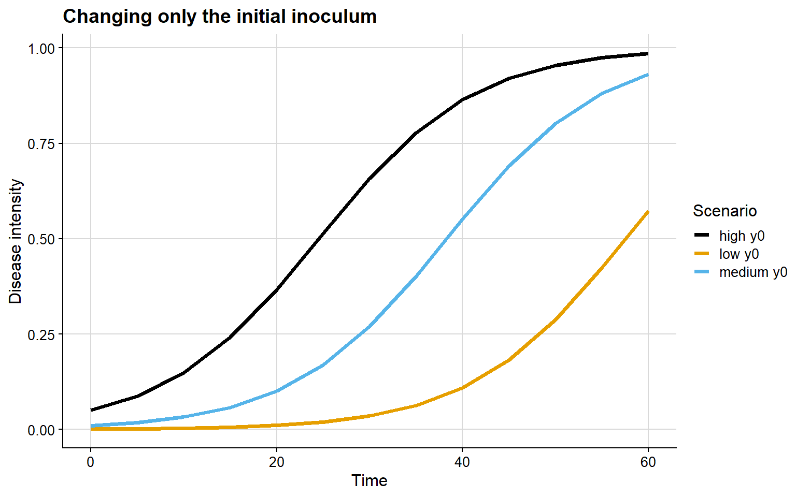
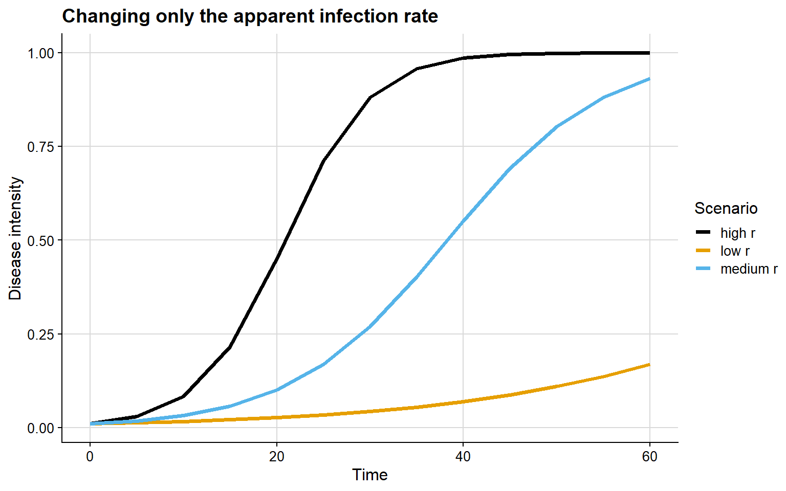
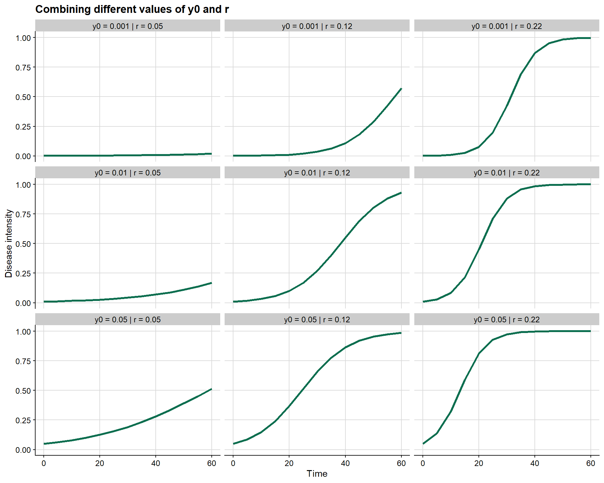
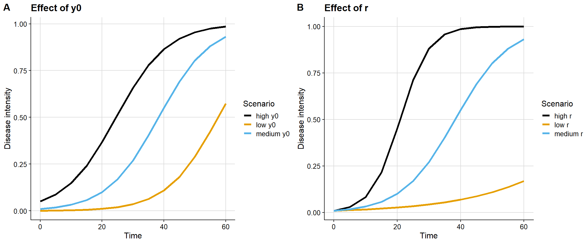

library(epifitter)
library(dplyr)
library(ggplot2)
library(cowplot)
library(ggthemes)Hello everyone!
In plant disease epidemiology, much of the biological interpretation of an epidemic depends on the shape of the disease progress curve. Two epidemics may reach similar final severity levels and still reflect very different processes in terms of initial establishment, growth rate, and the moment at which the system enters a phase of rapid expansion.
Consider, for example, two hypothetical situations. In the first, the epidemic is detected early because the system already starts the season with a relatively large amount of inoculum. In the second, the epidemic begins at a very low level but progresses rapidly because environmental conditions are highly favorable for infection, colonization, and pathogen reproduction. In both cases, an observer may record high disease intensity in late assessments, but the underlying epidemiological explanation is not the same.
This is precisely where simulation becomes useful. By simulating disease progress curves, we can isolate parameters, control assumptions, and examine how specific changes affect epidemic dynamics through time. The epifitter package is particularly valuable in this context because it generates synthetic epidemics from classical epidemiological models, allowing theoretical concepts to be translated into clear visual demonstrations.
In this post, I focus on two central parameters of temporal epidemiology:
y0: the initial inoculum, that is, the initial disease intensity at the beginning of the epidemicr: the apparent infection rate, that is, the parameter controlling the speed of epidemic progress through time
The goal here is to provide a more technical and conceptual discussion than a purely operational tutorial, using epifitter to show why these parameters are not interchangeable and why their interpretation requires care.
What epifitter can simulate
In the official epifitter documentation, the sim_ family of functions can be used to generate disease progress curves under several classical epidemiological models, including exponential, monomolecular, logistic, and Gompertz models. In the package simulation article, the main arguments include:
N: total epidemic duration in time unitsdt: interval between consecutive assessmentsy0: initial disease intensity or initial inoculumr: apparent infection raten: number of replicationsalpha: magnitude of random noise applied to the replications
From a methodological perspective, this makes the package very useful for teaching, scenario exploration, and epidemiological reasoning before moving to formal model fitting with empirical data.
Loading the packages
Initial inoculum as the boundary condition of the epidemic
In mathematical and epidemiological terms, y0 can be understood as the initial condition of the system. It defines the starting point of the epidemic at time zero. Therefore, when we compare epidemics under the same model and with the same value of r, differences in y0 mainly affect the initial position of the curve and, consequently, the moment at which the epidemic becomes detectable or epidemiologically relevant.
Biologically, larger values of y0 may reflect:
- greater inoculum survival between seasons
- a larger initial source of infection
- earlier presence of infected tissue
- a higher probability of detecting the epidemic in the first assessments
In the example below, r is held constant while only y0 changes.
epi_y0_baixo <- sim_logistic(N = 60, dt = 5, y0 = 0.001, r = 0.12, n = 1)
epi_y0_medio <- sim_logistic(N = 60, dt = 5, y0 = 0.01, r = 0.12, n = 1)
epi_y0_alto <- sim_logistic(N = 60, dt = 5, y0 = 0.05, r = 0.12, n = 1)
bind_rows(
epi_y0_baixo %>% mutate(scenario = "low y0"),
epi_y0_medio %>% mutate(scenario = "medium y0"),
epi_y0_alto %>% mutate(scenario = "high y0")
) %>%
ggplot(aes(time, y, color = scenario)) +
geom_line(linewidth = 1.3) +
scale_color_colorblind() +
theme_half_open(font_size = 12) +
labs(
title = "Changing only the initial inoculum",
x = "Time",
y = "Disease intensity",
color = "Scenario"
) +
background_grid()
The epidemiological interpretation of this graph is relatively straightforward:
- with low
y0, the epidemic remains at very low intensity for longer - with high
y0, the curve starts from a more advanced level - the main difference lies in the temporal position of the epidemic, not necessarily in the maximum slope of the curve
This matters because two fields may display similar final severities while having started the epidemic process at very different moments. From the perspective of monitoring and management, this distinction is crucial.
Apparent infection rate as a velocity parameter
If y0 defines the initial condition, r controls how quickly the epidemic expands. In disease progress models, r is usually interpreted as an aggregate parameter of epidemic efficiency, reflecting how strongly disease increases through time within the structure of the chosen model.
Larger values of r may be associated with:
- environmental conditions more favorable for infection
- greater efficiency of host colonization
- shorter or more intense secondary cycles
- greater host susceptibility
In the next example, y0 is fixed and only r changes.
epi_r_baixo <- sim_logistic(N = 60, dt = 5, y0 = 0.01, r = 0.05, n = 1)
epi_r_medio <- sim_logistic(N = 60, dt = 5, y0 = 0.01, r = 0.12, n = 1)
epi_r_alto <- sim_logistic(N = 60, dt = 5, y0 = 0.01, r = 0.22, n = 1)
bind_rows(
epi_r_baixo %>% mutate(scenario = "low r"),
epi_r_medio %>% mutate(scenario = "medium r"),
epi_r_alto %>% mutate(scenario = "high r")
) %>%
ggplot(aes(time, y, color = scenario)) +
geom_line(linewidth = 1.3) +
scale_color_colorblind() +
theme_half_open(font_size = 12) +
labs(
title = "Changing only the apparent infection rate",
x = "Time",
y = "Disease intensity",
color = "Scenario"
) +
background_grid()
Here, the interpretation is different from the one observed for y0:
- with low
r, the epidemic progresses slowly - with high
r, epidemic growth is much faster - the main difference lies in the slope of the curve and the time required to reach high disease levels
In practical terms, this means that epidemics with the same starting point may diverge substantially over time if the environment, host, or pathogen changes the efficiency of the infection process.
Why y0 and r may confound interpretation
One reason simulation is so useful is that, in observational data, it is not always trivial to distinguish the effect of y0 from the effect of r. In many situations, an observer may conclude that one epidemic is “more severe†simply because it appears more advanced at a given moment. However, this impression may arise either from a larger initial inoculum or from a higher progression rate.
For example:
- an epidemic with high
y0and moderatermay appear more advanced early on - an epidemic with low
y0and highrmay quickly overtake another curve after a short time interval
In other words, starting earlier is not the same as progressing faster. This distinction is conceptually important when comparing treatments, genotypes, seasons, locations, or management systems.
A simple factorial experiment
A useful strategy for visualizing this interaction is to combine different values of y0 and r in a grid of scenarios.
cenarios <- expand.grid(
y0 = c(0.001, 0.01, 0.05),
r = c(0.05, 0.12, 0.22)
)
simulacoes <- bind_rows(
lapply(seq_len(nrow(cenarios)), function(i) {
y0_i <- cenarios$y0[i]
r_i <- cenarios$r[i]
sim_logistic(N = 60, dt = 5, y0 = y0_i, r = r_i, n = 1) %>%
mutate(
y0 = y0_i,
r = r_i,
scenario = paste0("y0 = ", y0_i, " | r = ", r_i)
)
})
)
ggplot(simulacoes, aes(time, y)) +
geom_line(color = "#0b6e4f", linewidth = 1.2) +
facet_wrap(~ scenario) +
theme_half_open(font_size = 11) +
background_grid() +
labs(
title = "Combining different values of y0 and r",
x = "Time",
y = "Disease intensity"
)
This grid makes three points especially clear:
y0shifts the epidemic along the time axisrchanges the speed of epidemic growth- the combination of both may profoundly alter epidemiological interpretation
Comparing both effects side by side
A useful complementary visualization is to contrast, in parallel panels, the isolated effect of y0 and the isolated effect of r.
plot_y0 <- bind_rows(
epi_y0_baixo %>% mutate(scenario = "low y0"),
epi_y0_medio %>% mutate(scenario = "medium y0"),
epi_y0_alto %>% mutate(scenario = "high y0")
) %>%
ggplot(aes(time, y, color = scenario)) +
geom_line(linewidth = 1.3) +
scale_color_colorblind() +
theme_half_open(font_size = 12) +
background_grid() +
labs(
title = "Effect of y0",
x = "Time",
y = "Disease intensity",
color = "Scenario"
)
plot_r <- bind_rows(
epi_r_baixo %>% mutate(scenario = "low r"),
epi_r_medio %>% mutate(scenario = "medium r"),
epi_r_alto %>% mutate(scenario = "high r")
) %>%
ggplot(aes(time, y, color = scenario)) +
geom_line(linewidth = 1.3) +
scale_color_colorblind() +
theme_half_open(font_size = 12) +
background_grid() +
labs(
title = "Effect of r",
x = "Time",
y = "Disease intensity",
color = "Scenario"
)
plot_grid(plot_y0, plot_r, nrow = 1, labels = c("A", "B"))
This contrast makes clear that y0 and r affect different dimensions of the curve. The first mainly changes the initial condition; the second mainly changes the velocity of epidemic expansion.
What if I use other models?
The same reasoning can be extended to other models available in epifitter, such as:
sim_exponential()sim_monomolecular()sim_logistic()sim_gompertz()
The biological role of y0 and r remains central, but the way these effects are visually expressed depends on the mathematical structure of the model. For that reason, simulation is not just about producing attractive curves; it is about making explicit the epidemiological assumptions embedded in each equation.
Conclusion
From an epidemiological perspective:
y0answers the question: where does the epidemic start?ranswers the question: how fast does it advance?
These parameters are complementary, but not equivalent. Understanding this distinction is essential for interpreting disease progress curves, comparing epidemics, and discussing biological mechanisms with greater rigor.
epifitter provides a very effective way of translating this discussion into clear and reproducible visual demonstrations. For teaching, conceptual exploration, and hypothesis building, this type of simulation is particularly valuable.
In a future post, I can extend this discussion by explicitly comparing the exponential, monomolecular, logistic, and Gompertz models, highlighting how the interpretation of y0 and r changes with model structure.